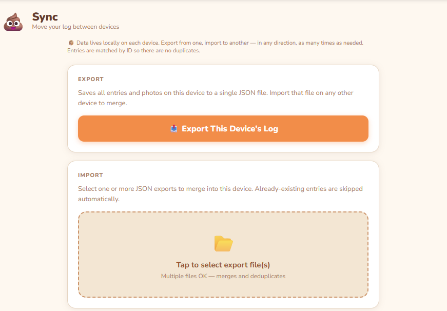

Personal Project · 2026
Poop Tracker: A Private, Offline-First Health Logging Tool
Yes, really. A pediatrician needed data. Every app that could collect it wanted to store it in the cloud. That was a non-starter.
Context
Our pediatrician asked us to track bowel movements over a two-week window using the Bristol Stool Chart, including photos when things looked unusual. A completely reasonable medical request. Slightly less reasonable to explain at dinner parties.
Problem
Every app I found required an account and cloud storage. I wasn't putting photos of my kid's poop in a random startup's database — full stop. The privacy constraint wasn't negotiable, which meant the entire category of "just use an existing app" was off the table.
What I actually needed was a logging form that worked on a phone, stored everything locally, and could produce something a doctor could look at. Google Forms/Docs would have worked fine, but I'd been on a vibe coding streak and figured this would be an interesting experiment.
What I Built
Before writing any code I scoped it as a single-file browser app. The architecture question was straightforward: localStorage for structured metadata (timestamps, Bristol type, color, notes) and IndexedDB for photos, keeping everything on-device. Rather than try to build sync, I designed around a deliberate manual export/import flow — you generate a JSON bundle on mobile and import it on desktop. That kept the architecture simple and made the privacy story clean. No sync server to reason about, no tokens to manage.
The mobile view is a logging form: Bristol type picker (1–7, with plain-language descriptions), color swatches, optional camera capture, and a notes field. The desktop view handles import, browsing the full log, and generating a PDF summary report. No backend, no accounts, no data leaves the device.
The report was handed directly to the pediatrician, who did not ask how it was made.
Outcome
Used it through the full two-week tracking window. It worked. We don't need to discuss the findings.
More practically: the pediatrician got a clean, readable report. The data never touched a third-party server. The whole thing took an hour to build, and made it more fun. That's about as good as a ratio gets for a project like this.
Technically anyone can use it -- just download the HTML and uh... have at it? Just don't tell me about it.

What I'd Do Differently
The photo storage architecture needed a mid-stream refactor when localStorage hit its 5MB cap — something I should have anticipated earlier. The split between localStorage and IndexedDB was the right call, but I didn't think through the size constraints carefully enough before starting, which meant revisiting architecture after I was already in the middle of building. A five-minute capacity calculation upfront would have saved it.
I'd also add entry editing from the start rather than waiting to see if I needed it. This required a bit of manual re-entry but wasn't a huge deal at the end of the day.